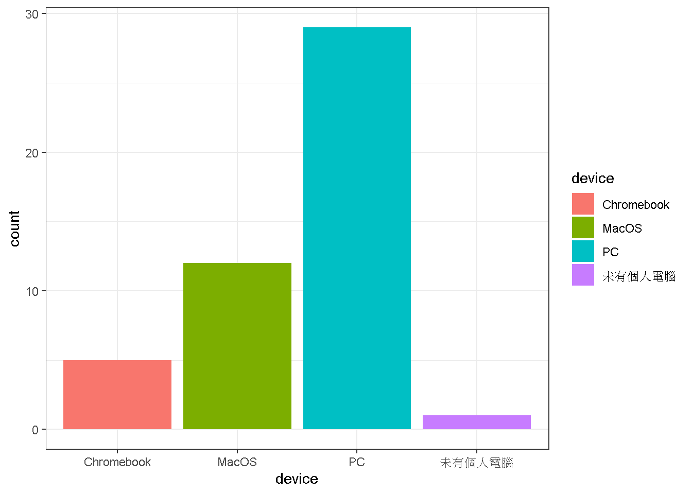

單元 1 00_0916從資料科學基本功開始的理由
1.1 為何心理學需要統計？
- 統計思考是所有領域心理學家的通識能力。
- 現代任何心理學主張都是建立在可被檢驗的資料，可被檢驗的資料都有不確定性。
你能多快唸出這些字？ 軸, 濘, 喙
你能回憶這些時間點你在什麼地方? 昨天此時? 十四天之前此時? 三十天之前此時?
- 統計學 評估與說明資料不確定性的現時技術。
1.2 2020世代學好統計的標準？
- 以明確的問題意識理解資料存在的意義
- 善用資料處理工具
- 運用視覺化模組解析資料的機率特徵: 平均數、標準差、相關、廻歸模型

圖 1.1: 課前個人設備調查
調查至2021-09-15 16:30:49，共有60位同學回覆，7位同學使用Chromebook或沒有自己的設備。
1.3 可重製統計是什麼？
瀏覽Level 1電子書，簡介單元安排
傳統的心統 vs. 可重製的心統
1.4 課程講授及作業演練模式
- 配合教學方法說明
| 模式A | 模式B | |
|---|---|---|
| 單元範圍 | 1 - 8 | 9 - 15 |
| 課前 | 完成前次單元作業 獲得作業回饋 |
觀看示範錄影、自行練習 |
| 上課時間 | 領取作業 依單元內容講授示範 課堂練習 |
領取作業 說明作業達成目標 完成單元作業 |
| 課後 | 完成單元作業 討論區提問或分享心得 |
討論區提問或分享心得 |
1.5 Hello! git and github
註冊github帳號：github帳號是值得經營一輩子的社群帳號，建議設定有個人特色的帳號名稱與頭像。上課前已經註冊並已造訪github classroom的同學，想更改名稱者請在今日課程結束後進行。
休息時間15分鐘~請正式修課同學在討論區的“Hello 第一次上課”帖子回覆留言，測試自已的github帳號能正常運作，順便互相認識修課同學。
待加選同學與胡中凡老師另開會議室討論
從github classroom領取作業“Hello! git and github”
依照使用設備分組，跟著老師/助教演練作業領取與繳交步驟:clone repo, commit作業存檔, push作業存檔
Windonws
MacOS
Rstudio Cloud(chromebook, 使用公用電腦)
Rstudio設定將在第三週有詳細介紹與作業演練，開場作業是協助同學熟練基本操作與檔案管理，只要了解如何使用Rstudio處理作業複本
- 下課前: 本機學習筆記、作業檔案管理建議